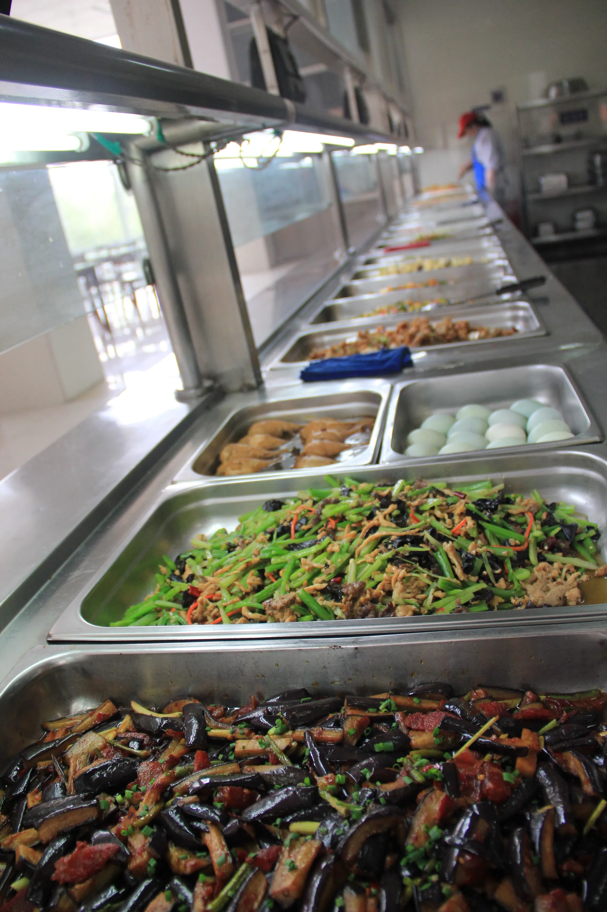
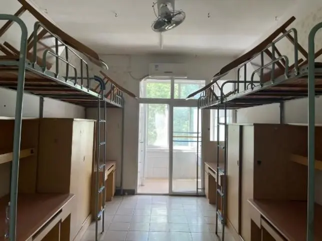
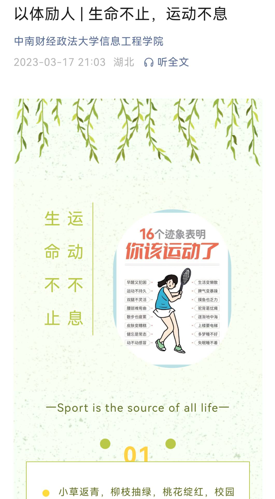
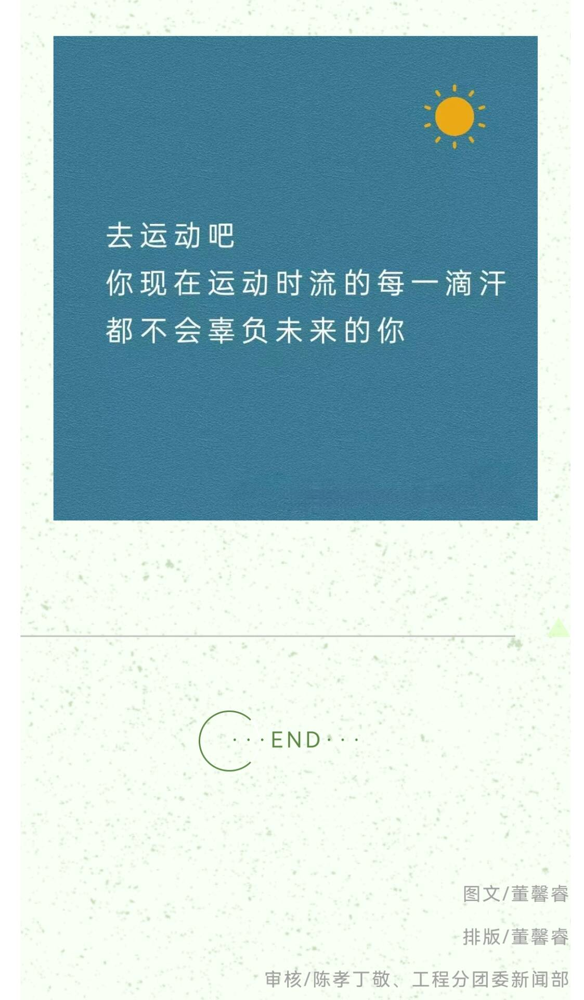

学校现有两个校区，南湖校区位于风景秀丽的南湖之畔，首义校区位于历史悠久的黄鹤楼下。 学校占地2800余亩，建筑面积120余万平方米。建有中国货币金融历史博物馆、中国会计史文博馆等 特色文化展馆。
两校区共有8个食堂3个餐厅（南湖校区一个留学生餐厅,首义校区、南湖校区各一个清真餐厅）,首义校区现正式 对学生提供餐饮服务的食堂有2个（即学生一、二食堂），南湖校区有学生四、五、六、八、九、十食堂共6个食 堂为广大师生服务。“民以食为天”。多年来，膳食服务中心坚持把满足师生员工的进餐需求，让师生员工吃得安 全、放心、满意放在首位。各食堂定位合理，功能划分齐全，在保证饮食卫生和安全的前提下，尽量满足来自五 湖四海的师生不同层次、不同口味的需求，经营的菜肴价格分低、中、高三个档次，品种丰富多样。 宿舍内上床下桌的设计，既保证了个人的隐私，也方便了学习与休息。 空调、独立卫生间、阳台等标配设施，让生活更加便利。
 
| 星期一 | 星期二 | 星期三 | 星期四 | 星期五 |
|---|---|---|---|---|
| 运筹与决策 | 信息科学前沿 | 形势与政策 | 信息科学前沿 | 运筹与决策 |
| Java程序设计 | 新经济制度 | 网络工程技术与运用 | 管理学 | 体育专项 |
| 西方经济学 | web前端开发 | 网工实验课 | 数据库管理实务 | |
| 西方经济学 | web前端开发 | 数据库管理实务 | 网工实验课 | Java实验课 |
通过参与开学时的团学志招新。
撰写新闻稿
参与学院和学校举办的各类活动，拍照记录并撰写相关活动推文。
组织学院内的一些活动，记录活动内容。
 